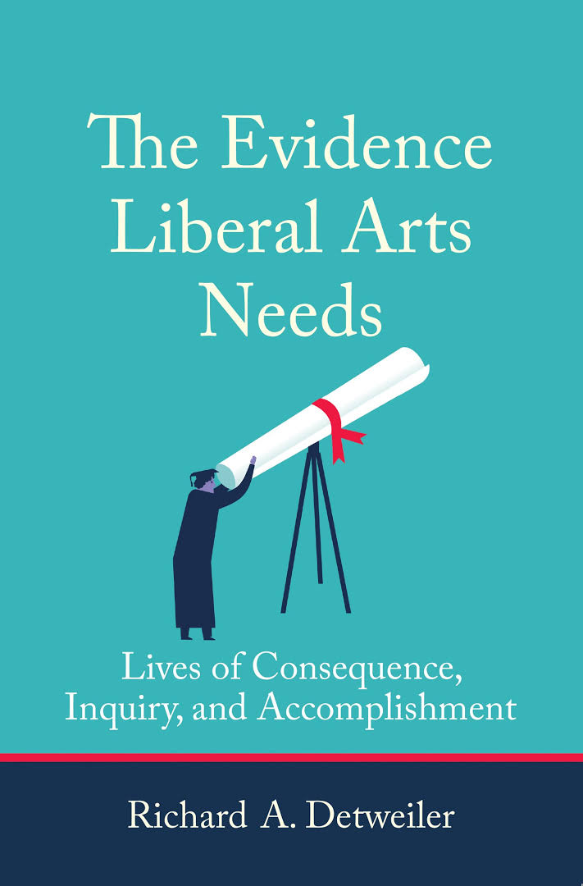

I’m choosing a college
“Who do I want to become, and which colleges will help me get there?”
Start the 2-minute quizIt’s not the major. It’s not the ranking. It’s what happens there.
We asked 1,000 people, ten, twenty and forty years after college, about their college years and about their lives now. The ones who were leading, giving back, still curious, doing well and finding their lives worthwhile had something in common. It had less to do with where they went or what they majored in, and more to do with what happened to them there.
Each of these choices opens with a two-minute quiz. There are no wrong answers, and what you see next depends on what you say.
“Who do I want to become, and which colleges will help me get there?”
Start the 2-minute quiz“Am I getting the part of college that lasts?”
Start the 2-minute quiz“What do I hope college will give my child, for the rest of their life?”
Start the 2-minute quiz“How do I help each student find a college that’s right for the life they want?”
Start the 2-minute quiz“Which parts of my teaching will still matter to students in thirty years?”
Start the 2-minute quiz“Do our budget and incentives protect and enhance what changes students’ lives?”
Start the 2-minute quiz“What should we assess and measure about college that is worthwhile over a lifetime?”
Start the 2-minute quizWhat we know about what matters in college: all the findings · How the study was done
The study looked at six parts of graduates’ adult lives:

Richard A. Detweiler, The Evidence Liberal Arts Needs: Lives of Consequence, Inquiry, and Accomplishment (MIT Press, 2021).
The research on this site is reported in this book. About the book and the study
What College Is Really For is a public education program of HigherEdImpact, a 501(c)(3) nonprofit. About HigherEdImpact